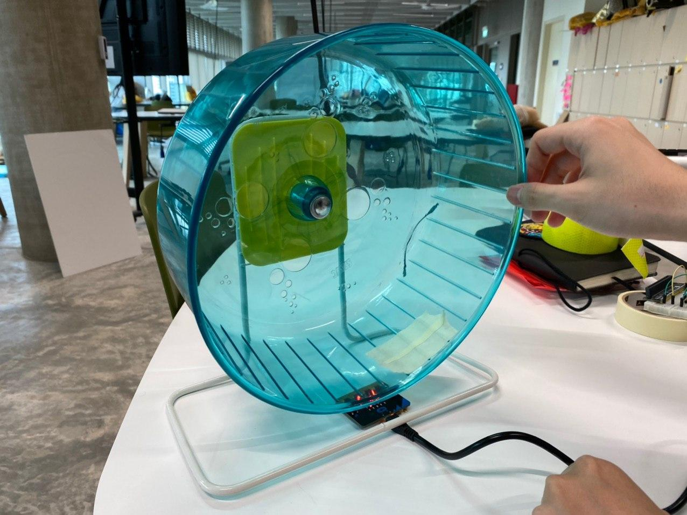

Uplogging in process..
Uplogging in process..
Oh Dam...
Uplogging in process..
Week 4  We explored using light sensor to track the rotary movement of the hamster wheel
 Using masking tape to create a shadow, in place of the hamster.
Using masking tape to create a shadow, in place of the hamster.
 Video to show the sensor in motion
Video to show the sensor in motion